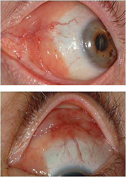
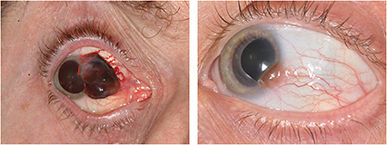
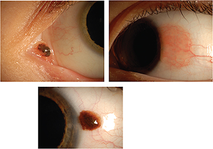
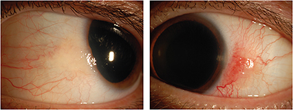
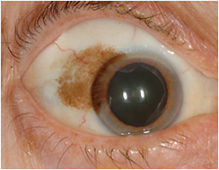

This article focuses on the most common types of benign and malignant conjunctival tumors. If you come across a malignancy, please contact a specialist about the best course of action for your patient.
Representing nearly 70% of cases, conjunctival nevus (CN) is a benign mole that can occur on the eye’s surface. It is usually detected in children ages 2 to 5 years. CN usually appears brown in color, but can be non-pigmented and transparent. The tip-off that you’re dealing with a nevus is that it tends to be on the surface of the eye in sun-exposed areas, like 3 o’clock and 9 o’clock at the limbus, where the eyelids are open and exposed to sunlight. About 1% of CNs or fewer transform into a melanoma.
Conjunctival lymphoma appears as a “salmon” colored lesion in the fornix. Often there is systemic lymphoma.
Treatment: We keep an eye on nevi. If they get larger, darker or start to develop irregular margins, we recommend that patients have them removed. Some patients choose to have them removed for cosmetic reasons or due to concern that they might turn cancerous. If you remove one, make sure to send it to a pathologist for analysis.
Another benign condition of the eye, conjunctival primary acquired melanosis (PAM), carries a 10% to 30% risk for transformation into melanoma. PAM looks like a flat freckle with slightly irregular margins. It appears dusty, almost like someone has sprinkled a little bit of cocoa on the eye surface. Usually seen in middle aged and older adults, PAM can occur anywhere on the globe surface: under the eyelid, in the caruncle, even over the corneal surface. It does not present with cysts or any appreciable thickness. If it is large in base, like 3 or 4 clock hours in diameter or larger, then it is treatable. Smaller sites should be monitored. If it eventually shows growth and creeps on the eye surface, it will require treatment.
Treatment: PAM can be completely resected or treated with mitomycin C (Mutamycin, Bristol- Myers Squibb) eye drops. Because mitomycin is toxic to the eye’s surface, we only give it in one-week dosages. We dispose of leftover medication so patients don’t mistake it for artificial tears or other eye drops. Patients take mitomycin four times a day for one week, then rest a week, then go back on for another week, and rest a fourth week. PAM also responds beautifully to cryotherapy, which generally is performed in the operating room if the PAM? is extensive.
Conjunctival melanoma can appear as a pigmented (left image), or a non-pigmented (right image) tumor. The larger the lesion and the closer it is to the fornix, the worse the prognosis. Metastasis can occur in 25% of patients.
Conditions that can simulate melanocytic tumors of the conjunctiva: The list of conditions that can resemble these tumors is extensive and includes pinguecula, pterygium, conjunctivitis, silver deposition on the conjunctival surface from argyrol eye drops, lymphangioma, lymphoma, and hemorrhagic conjunctival cyst. It is important that physicians recognize and appreciate these simulators of melanomas, for two reasons: to improve recognition of the various conjunctival malignancies and to ensure that patients with these tumors are referred for consultation promptly. (For more information, see Shields CL, Shields, JA. Tumors of the Conjunctiva and Cornea. Surv. Ophthalmol. 2004;49:3-24.)
The most common malignant tumor of the ocular surface, squamous cell carcinoma (SCC) is typically found in older adults with fair skin who, over time, have spent hours in the sun, like a golfer or fisherman. Others at risk include people who have immunosuppression following organ transplantation; people with HIV; and heavy smokers. SCC looks like a piece of ill-defined Jell-O sitting on the ocular surface. Sometimes there is leukoplakia, a flat white crust on the surface, signifying keratin production. Often there are large feeder vessels with intralesional, telangiectatic, crisscrossing, hairpin loop vessels. This is a tip-off for SCC. SCC can grow anywhere on the ocular surface, including the cornea.
Treatment: We like to surgically resect SCC using no-touch surgery, which occurs under a microscope in the OR. We apply alcohol to the corneal component and carefully scroll it off. Next, we cauterize around the tumor site in the conjunctiva to shrink the feeder vessels, so we can resect the tumor with scissors. As we get down to the base, which adheres to the wall of the eye, we perform a very thin lamellar episcleral dissection so the side and basal margins are clean. Then we remove in one piece the corneal and conjunctival components, place them on a piece of cardboard, float them in formalin and send them to our pathologist. Cryotherapy is provided to all conjunctival tissue abutting the tumor margin and the resection base is treated with absolute alcohol, carefully scrolling what could be any residual tumor onto a Wexcell sponge so all tumor is removed. Finally, we use a double layer closure, closing Tenon’s fascia and then the conjunctival epithelium.
Patients have an acceptable cosmetic appearance following the procedure. But if the defect is more than four or five clock hours, we will still close Tenon’s fascia, but we use an amniotic graft on the surface epithelium to close the wound. For that, we take frozen amnion and fashion a graft that will just fit the defect, place it on the eye, use four vicryl sutures to hold it in place, and then put a touch of tissue glue under the graft (to stick to the eye) and over the graft (so the patient doesn’t feel it). Finally, we use an antibiotic steroid ointment and patch the eye closed for three to four days. Patients do well. We use the same amniotic grafts to close surgery from any benign or malignant tumor that leaves a large hole in the conjunctiva.
Conjunctival nevus tends to occur in children, and can be in the caruncle (top left), or on the bulbar (top right) conjunctiva. Often it is pigmented (bottom right). Nevus can transform into melanoma in less than 1% of cases.
Other ways to treat SCC include medications, or cryotherapy for tiny tumors. If the tumor is really extensive and we don’t want to take off too much tissue, we can use mitomycin in a similar fashion that we do for PAM. For some immunosuppressed patients, or elderly patients who are poor surgical candidates, we use interferon drops in a dosage of 1 million units/cc. Patients use the drops four times a day for three to six months with minimal local or systemic toxicity. It’s a slow way of eliminating the human papilloma virus causing the cancer, which in turn eliminates the cancer itself. We also use interferon for patients with large SCCs to shrink the tumor before resection. Another alternative is to inject interferon under the malignancy to shrink it down.
SCCs can metastasize and cause death, but do so in fewer than 1% of patients. Still, you need to watch immunosuppressed patients carefully. We keep some on one drop of interferon daily for life – it’s enough to keep the papilloma virus away, and they have minimal complaints.
This is the most aggressive cancer on the ocular surface that we see. It generally arises from PAM but can arise from nevi or de novo. Those that start de novo are usually the most malignant with the highest risk for spread. There is an overall 20% risk it will spread within 10 years. When that happens, it goes to the facial lymph nodes. Conjunctival melanoma can be tough to control and extensive. PAM-produced melanoma is often multifocal melanoma. Patients might have no clue that they have melanoma until their eye specialist lifts their eyelid and detects a brown mass underneath. If it grows deep into the orbit, there’s a 60% chance the patient will have metastatic disease and die within 10 years.
Melanoma appears like a multinodular, thick brown mass with large vessels feeding it. This tumor classically has no intralesional cysts, can sometimes bleed, and can grow on to the cornea or anywhere else – into the eyelid, into the orbit, and in rare cases into the eye. Melanoma is most often found in adults ages 50 to 60 years, but can occur in children. The bad news is it tends to metastasize to the lymph nodes, brain and chest. About 20% to 30% of patients wind up with exenteration.
Treatment: Surgery is the only option. We use the same no-touch technique as we do for SCC. We have to completely remove the whole tumor and place cryotherapy at every margin to ensure every cell is treated. If pathology finds residual tumor in the margins, we go back and remove the margins to spare patients the risk for recurrence and metastasis.
This slow developing tumor is tricky. Lymphoma hides deep in the fornix so you often don’t see it in front of you. The tumors are usually fairly extensive and can exist under the whole length of the eyelid. It looks like smoked salmon under the conjunctiva and has a smooth surface, often with dilated intrinsic and feeder vessels. It’s painless to patients and can cause the eyelids to look full, like something is pushing on them.
If a patient has lymphoma on one eye, there’s a 15% risk the person will have systemic lymphoma. If lymphoma is in both eyes, that risk climbs to 50%; if lymphoma creeps into the orbit, that risk increases to 70%.
Conjunctival squamous cell carcinoma typically occurs at the limbus in older patients as a vascular or non-vascular gelatinous mass, often with corneal epithelial involvement.
Treatment: This lymphoma has several treatments. One is surgery. We un-roof it by making an incision in front of it, deep into the conjunctival surface so we can elevate the conjunctiva, and we de-bulk it. Sometimes we can remove it all; sometimes these tumors wrap around the superior rectus or other muscles so we have to leave them in and give the patient postoperative chemotherapy or radiation. Medications also can be effective. Sometimes we give our lymphoma patients lansoprazole (Prevpac, Takeda, Deerfield, IL) a medicine used to treat stomach lymphoma, for two months. This minimizes the risk of systemic lymphoma while controlling the ocular lymphoma.
Conjunctival primary acquired melanosis appears as flat pigmentation in middle aged Caucasian patients, and can lead to melanoma in 10%-30% of patients.
Patients who have systemic lymphoma are treated with chemotherapy. Rituximab (Rituxan, Genentech, South San Francisco, CA) is particularly effective. It targets lymphoma cells that have a marker on their cell surface called CD20. Between one to four months, this drug melts lymphoma away. It’s an effective way to treat patients but an oncologist must administer it. Radiation is an option, but we sometimes hesitate to do that because of the risks of radiation retinopathy and radiation–related cataracts, especially if patients have diabetes. We save radiation as a last resort.
Conjunctival tumors can be common and merely observed, or serious with need for treatment. Ophthalmologists should know the different types and triage the patient for appropriate care. Conjunctival tumors can be more than just an eye problem. OM
About the Author | |
Carol Shields, MD, is co-director of the Ocular Oncology Service at Wills Eye Hospital in Philadelphia and professor of ophthalmology at Thomas Jefferson University. Her e-mail address is carolshields@gmail.com. | |